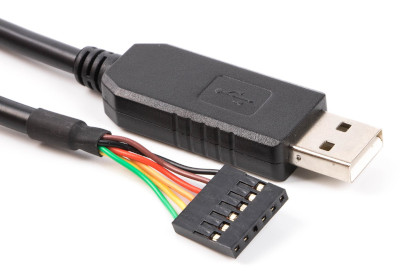
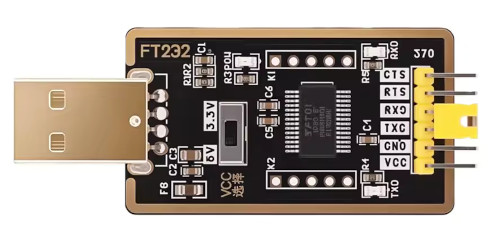
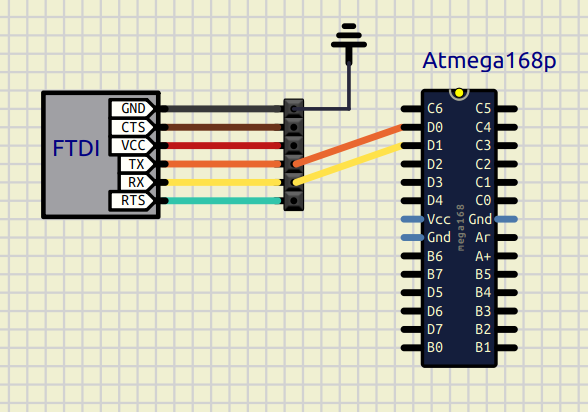

Como utilizar el protocolo USART (Universal Synchronous Asynchronous Receiver Transmitter) usando el hardware de un microcontrolador AVR.
El USART nos permite comunicar un microcontrolador con un ordenador a traves de una conexión serie, usando programas como minicom o screen.
El protocolor USART permite tanto el uso en modo asíncrono como síncrono, en este caso usaremos solo el modo asíncrono (UART)
Para conectar un microcontrolador con nuestro PC tendremos que usar un adaptador serie, cable FTDI, que se conecta a traves del USB de nuestro ordenador.
NOTA: Antiguamente se usaría el puerto serie (RS232), pero ya está casi extinto
El cable FTDI incluye in chip interno que hace la conversión entre USB y salida serie, tiene el siguiente aspecto:
Tambien se venden en adaptadores de este estilo (FT232):
Para hacer las conexiones solo necesitamos 3 cables de los 6:
El GND lo conectamos al mismo GND del microcontrolador para que compartan el voltaje de referencia, despues el TX del cable lo conectamos al RX del microcontrolador (PD0), y el RX del cable se conecta al TX del microcontrolador (PD1):
NOTA: Si queremos tambien podemos usar el VCC del cable para alimentar el microcontrolador, ese cable es de 5V.
TRUCO: Si queremos testear el adaptador FTDI, simplemente podemos puentear TX con RX en el propio cable y actuará como un echo, lo que enviemos lo recibiremos instantaneamente, de este modo comprobamos que el cable funciona correctamente.
Para usar un adaptador serie desde el PC, lo haremos con una herramienta como minicom o screen, indicando el dispositivo y el baudrate:
Ejemplo con minicom:
minicom -D /dev/ttyUSB0 -b 9600
NOTA: para más información sobre minicom podemos consultar esta página del manual
Ejemplo con screen:
screen /dev/ttyUSB0 9600
Para saber el dispositivo concreto siempre podemos consultar /dev para ver cual es el nuevo dispositivo que se crea o consultar dmesg justo despues de conectar el cable, pero siempre debería de tener un nombre parecido a "ttyUSB0"
9600 es el baudrate al que se establecerá la conexión (bits por segundo), algunos de los valores típicos son los siguientes:
Para hacer uso del hardware USART del microcontrolador tenemos que hacer lo siguiente:
Primero necesitamos definir el baudrate, normalmente se hace en el Makefile, pero podemos hacerlo en el archivo principal definiendo la constante BAUD:
#define BAUD 9600
A continuación tenemos que configurar e iniciar el hardware USART del microcontrolador:
#include <util/setbaud.h>
/*Set baud rate */
UBRR0H = UBRRH_VALUE;
UBRR0L = UBRRL_VALUE;
/*Enable receiver and transmitter */
UCSR0B = (1<<RXEN0)|(1<<TXEN0);
/* Set frame format: 8data, 1stop bit */
UCSR0C = (1<<UCSZ01)|(1<<UCSZ00);UBRRH_VALUE y UBRRL_VALUE son macros que están en <util/setbaud.h>, estos macros ya se encargan de obtener el balor correcto usando el baudrate indicado y la frecuencia de oscilacion.
Para transimitir un byte lo haríamos así:
void USART_Transmit(uint8_t data){
/* Wait for empty transmit buffer */
loop_until_bit_is_set(UCSR0A, UDRE0);
/* Put data into buffer, sends the data */
UDR0 = data;
}Para recibir un byte lo haríamos así:
uint8_t USART_Receive(){
/* Wait for data to be received */
loop_until_bit_is_set(UCSR0A, RXC0);
/* Get and return received data from buffer */
return UDR0;
}Un ejemplo del código completo sería el siguiente, con la inicialización, transmisión y recepción:
#include <avr/io.h>
#include <avr/power.h>
#include <util/setbaud.h>
void USART_Init(){
/*Set baud rate */
UBRR0H = UBRRH_VALUE;
UBRR0L = UBRRL_VALUE;
/*Enable receiver and transmitter */
UCSR0B = (1<<RXEN0)|(1<<TXEN0);
/* Set frame format: 8data, 1stop bit */
UCSR0C = (1<<UCSZ01)|(1<<UCSZ00);
}
void USART_Transmit(uint8_t data){
/* Wait for empty transmit buffer */
loop_until_bit_is_set(UCSR0A, UDRE0);
/* Put data into buffer, sends the data */
UDR0 = data;
}
uint8_t USART_Receive(){
/* Wait for data to be received */
loop_until_bit_is_set(UCSR0A, RXC0);
/* Get and return received data from buffer */
return UDR0;
}
int main(){
clock_prescale_set(clock_div_1);
DDRB = 0xFF;
USART_Init();
USART_Transmit('h');
PORTB = USART_Receive();
return 0;
}
Podemos configurar adicionalmente un 2 bits de parada en vez de uno, lo haríamos así en el registro UCSR0C
UCSR0C = (1<<USBS0) | (1<<UCSZ00) | (1<<UCSZ01);
Si queremos transmitir numeros en ascii para poder visualizarlos directamente en la consola podemos hacerlo con el siguiente código:
#define NUMBER_DIGITS 4
void Transmit_Number(int number){
char number_string[NUMBER_DIGITS] = {0};
int i = NUMBER_DIGITS;
while(number > 0){
number_string[i-1] = number%10;
number = number / 10;
i--;
}
for(i=0; i<NUMBER_DIGITS; i++){
USART_Transmit(48 + number_string[i]);
}
}AVR | microcontrolador | USART | UART | FTDI